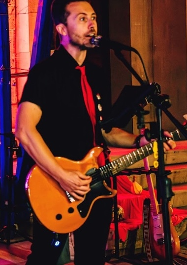
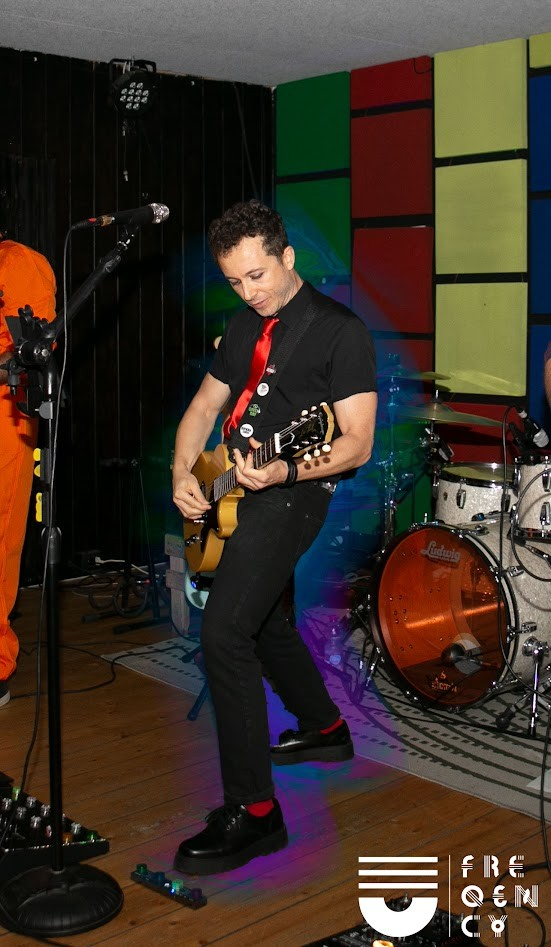
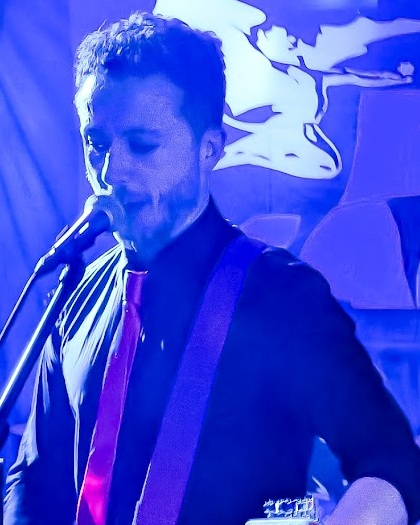

1. Penza · Braccio al Cielo
Occhio clinico perfetto: prima eri a X=245 su 418 (spostato a destra). Ora è ritagliata eliminando i vasi a sinistra: il tuo busto, cravatta e mano sono esattamente sull'asse centrale! Carisma puro da frontman.

2. Abbey Road · Canto a Squarciagola
Canti a pieni polmoni al microfono con la chitarra TV Yellow, cravatta rossa e sfondo Black Sabbath. Trasmette l'impatto sonoro e l'energia dello show.

3. Penza Live · Luci Magenta & Canto
Ritagliata sul tuo mezzobusto dalla foto ad alta risoluzione LB Photography: chitarra, voce al microfono, luci magenta calde e parete in pietra.

4. Freqency · Figura Intera
Total black con spillette, cravatta rossa, TV Yellow e creepers. Molto curata nell'abbigliamento e nello stile di Billie Joe.

5. Club Session · Luce Blu
Centrata perfettamente con Stratocaster a tracolla e microfono in atmosfera notturna.